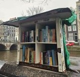
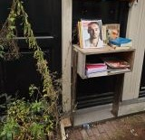

Deze minibieb staat op de Keizersgracht 242. Deze accentueert in wat voor gekke plekken je de biebjes kan vinden. Deze staat namelijk op een transformatorhuisje en heeft een jasje tegen de regen.
Hoe te herkennen
Mini-biebs zijn vaak zelfgemaakt en variëren van eenvoudige houten kistjes en boekenkasten tot creatief ontworpen mini-huisjes. Ik heb een route door De 9 Straatjes gelopen op zoek naar deze bijzondere biebjes. Zie hieronder de verschillende boekenkastjes die ik onderweg ben tegengekomen!
Deze minibieb staat op de Keizersgracht 242. Deze accentueert in wat voor gekke plekken je de biebjes kan vinden. Deze staat namelijk op een transformatorhuisje en heeft een jasje tegen de regen.
Deze minibieb staat op de Keizersgracht 242. Deze accentueert in wat voor gekke plekken je de biebjes kan vinden. Deze staat namelijk op een transformatorhuisje en heeft een jasje tegen de regen.
